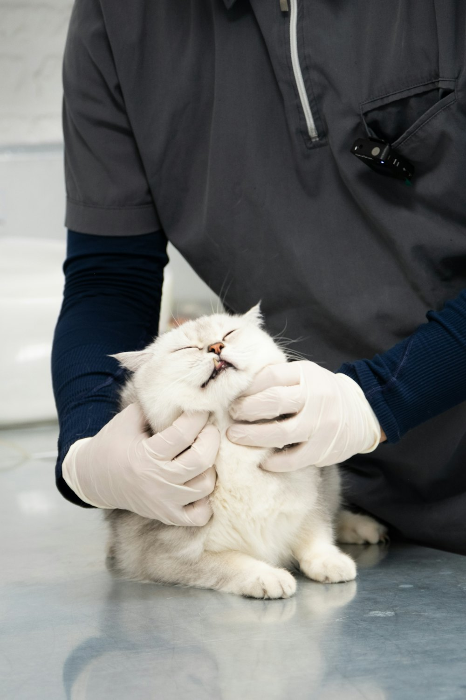
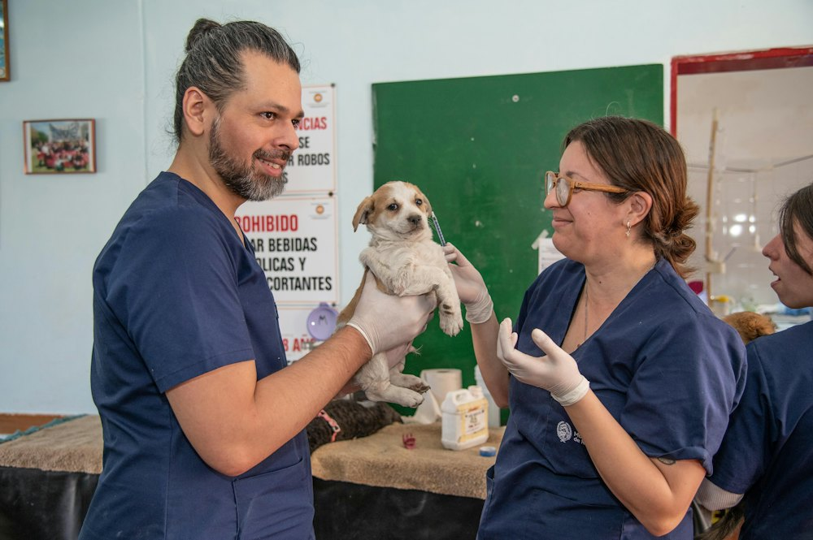
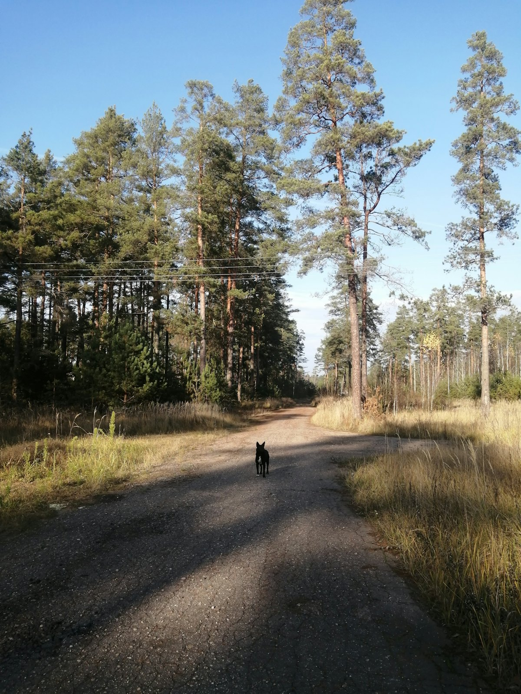
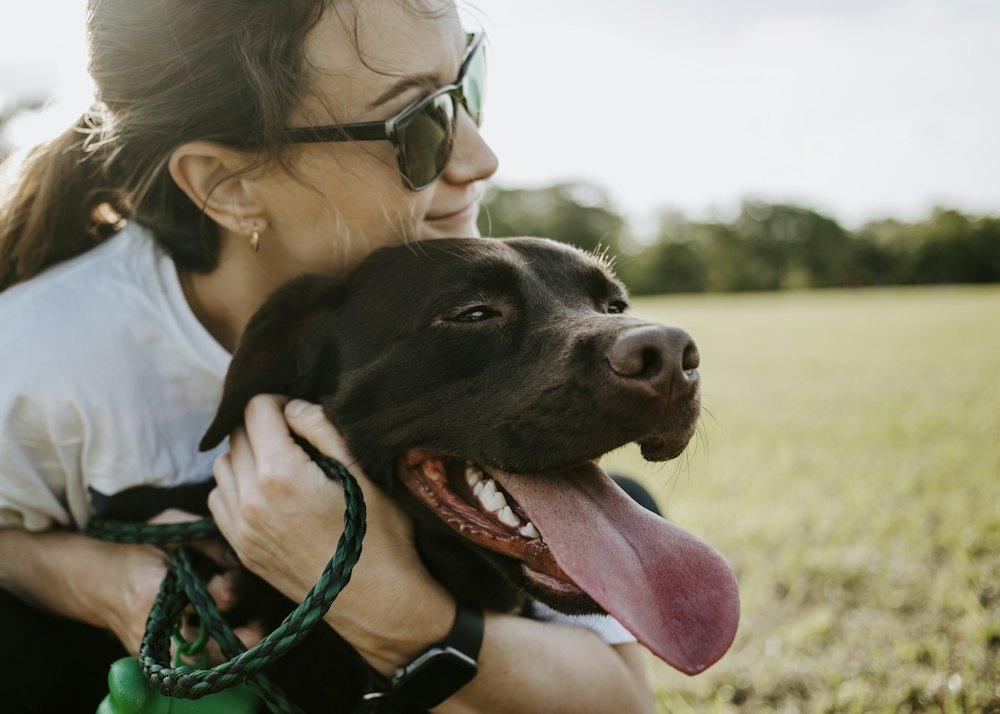
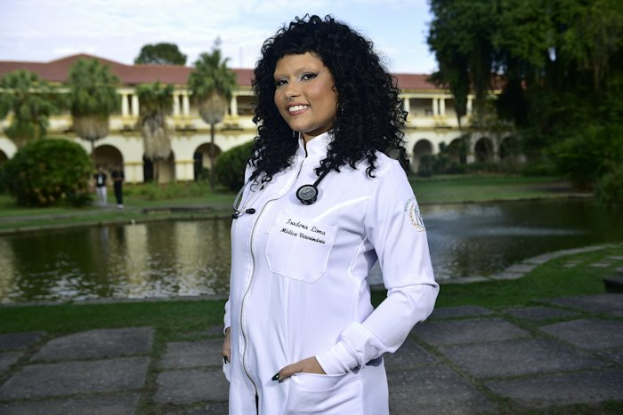
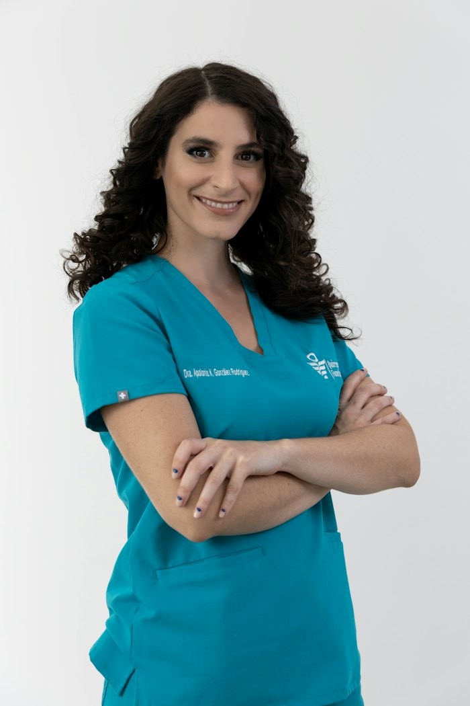
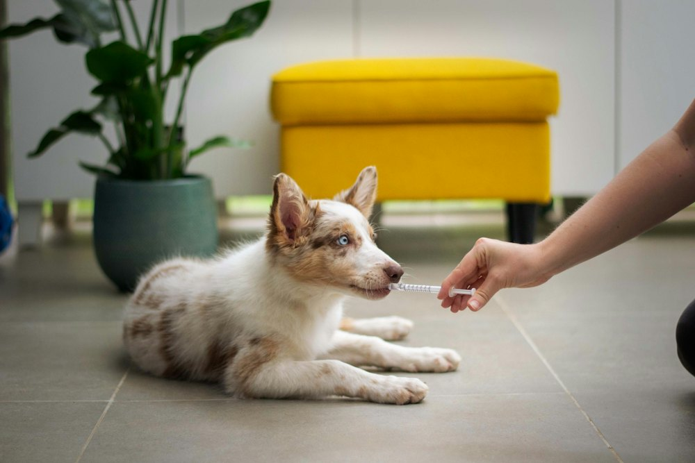
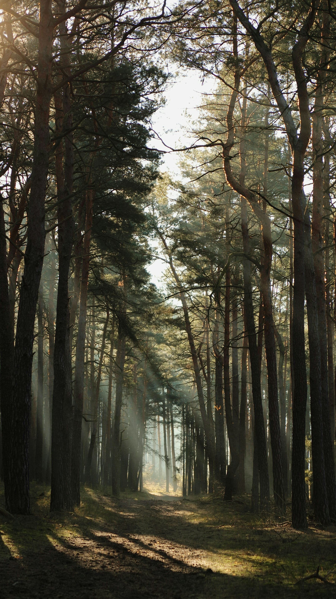

Bienveillance
Manipulations douces, zéro contention inutile, et le temps de rassurer.
Depuis 2009, nous soignons les animaux de la côte landaise avec rigueur et douceur.
Tout commence en 2009 quand le Dr Amandine Lartigue, fille de gemmeurs landais, ouvre un cabinet de deux pièces au bord de la forêt de Mimizan. Son idée : un lieu où les animaux n'auraient plus peur d'aller chez le vétérinaire.
Dix-sept ans plus tard, la Clinique des Pins compte quatre vétérinaires, trois auxiliaires, un bloc opératoire, un laboratoire… et toujours la même pinède où nos patients en convalescence viennent se dégourdir les pattes.




Manipulations douces, zéro contention inutile, et le temps de rassurer.

Formation continue, protocoles validés et diagnostics fondés sur la preuve.

Devis avant chaque acte, explications claires, compte-rendu écrit.

Clinique éco-conçue, déchets médicaux triés, partenaires locaux.
Quatre vétérinaires complémentaires, épaulés par trois auxiliaires spécialisées.

Fondatrice · Médecine interne
Passionnée de cardiologie, elle connaît chaque sentier de la forêt par cœur.
Chirurgie & orthopédie
Il a imaginé le Sentier des Pins pour la rééducation après opération.

NAC, oiseaux & chats
Référente « Cat Friendly », elle parle aussi couramment le perroquet.
Imagerie & urgences
Échographiste, il coordonne aussi les gardes de nuit et du week-end.
Un plateau technique moderne dans un cadre apaisant.





Venez visiter la clinique ou découvrez l'ensemble de nos services.